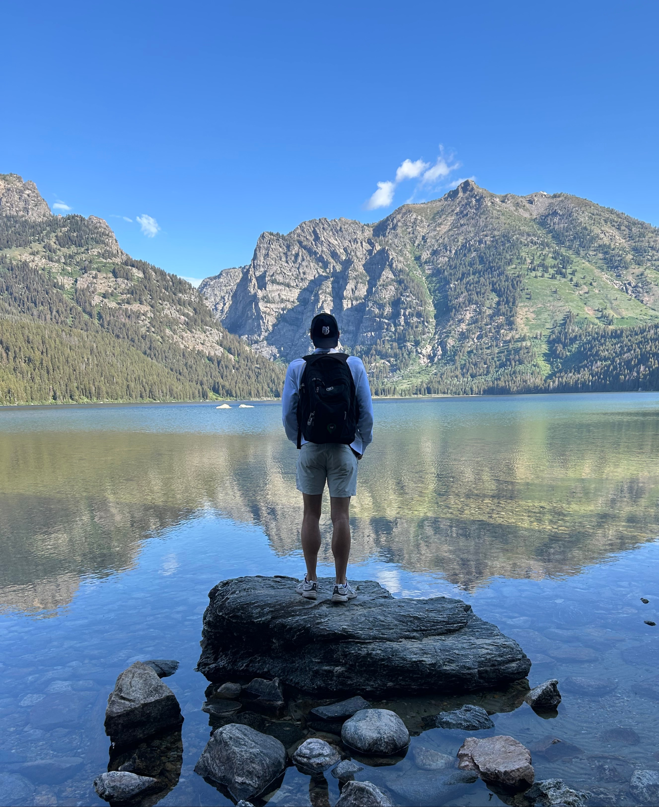
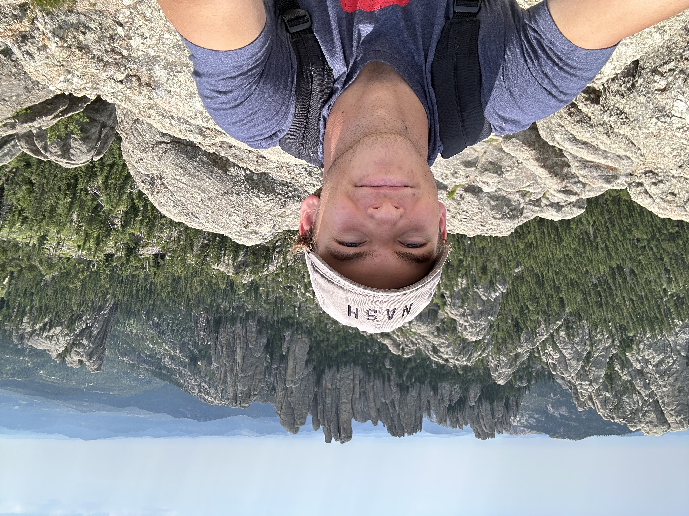

I enjoy traveling and have been lucky enough to enjoy a few good views.

I took this photo while on a camping trip with my dad in Grand Tetons National Park. It was beautiful, and I would want to go back to with my future wife and kids someday.

The Black Hills in South Dakota are the most underrated region of the United States. They are technically part of the Rocky Mountains despite being isolated from the other hills. The Black Hills are my favorite place to visit during the summer. I took this selfie after a 12 mile hike / climb to get to this viewpoint named "Little Devils Tower."